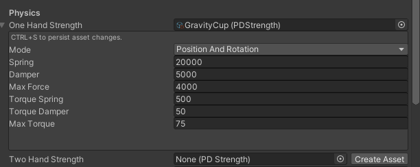

PD Controller
The hands are driven using a PD controller. The implementation makes use of Unity's Configurable Joint to take advantage of the physics engines iterative nature and stability of simulation that joints allow.
PD controllers are simply PID controllers that ignore the I component, if you want to learn more on the subject then check out this excellent video on the topic - PID Control.
PDStrength Scriptable Object
Strengths are saved in a scriptable object asset so that the values can easiy be reused. Keep this in mind when editing the values as you may affect multiple objects that are referencing this asset.
The Mode field will allow you to optionally override both Position and Rotation, Position (force) only, or Rotation (torque) only. This way you don't need to assign the default value to all fields if you want to override force or torque only.

Default Strength
The 'Strength' field is located on the HVRJointHand (HVRHexaBodyHands if using the HexaBody integration rig).
These components reside on the 'Physics LeftHand and Physics RightHand' objects under the rig root.
Grabbable Strength Overrides
Each grabbable object can change the hand strength values when they are grabbed.
One Hand Strength will take affect when only one hand is grabbing this object.
Two Hand Strength will take affect when both hands are grabbing this object.
If the asset reference hasn't been assigned yet, the 'Create Asset' button will appear allowing you to quickly create a PDStrength asset.

Compound Grabbables
Sometimes your objects may be made up of multiple grabbables. The included SMG, Pistol, and Shotgun are examples of this.
The HVRTwoHandStrength component can be used to tell the strength system other grabbable objects to consider for two hand strength overrides.
In the below image the foregrip Grabbable of the SMG is linking to the main SMG grip grabbable so that Two Hand Strength settings will kick in when both grabbables are held.
In this specific example. The foregrip has a Rotation only PD Strength assigned so that the foregrip hand cannot rotate the gun - only move it positionally.

Tuning the PD Controller
Spring is the 'P' or Proportional parameter of the PD controller. Damper is the 'D' or Derivative parameter of the PD Controller. Max Force / Torque limits the final output of the PD controller.
Generally you tune the P component to get the responsiveness that you want - ignore overshoot at this point.
Once you reach the desiered level of responsiveness, increase the Damper until the hand no longer overshoots.
Dividing the Spring value by 10 is a good starting point for tuning the Damper.
Then finally limit the Max value based on how strong you want the hand to be.